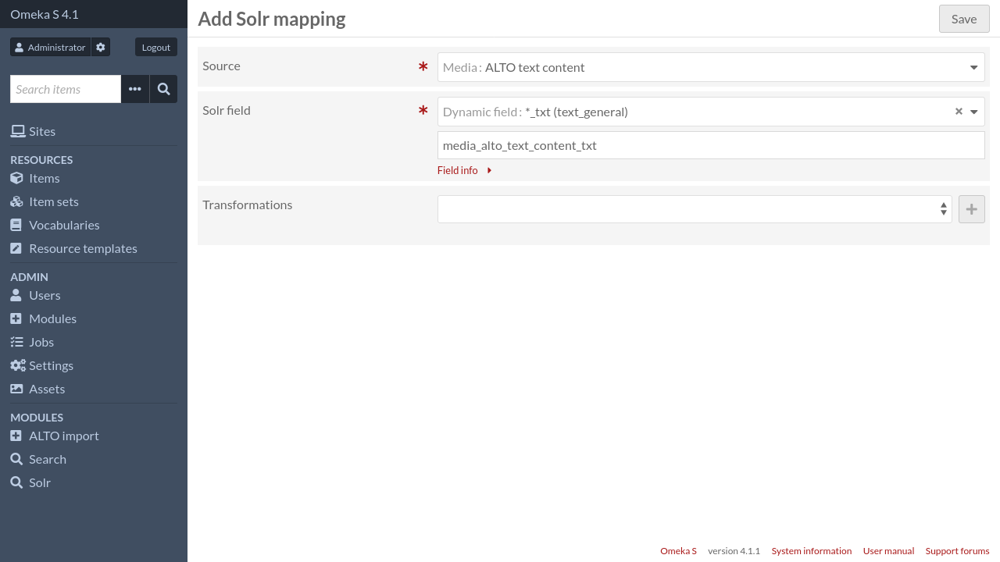
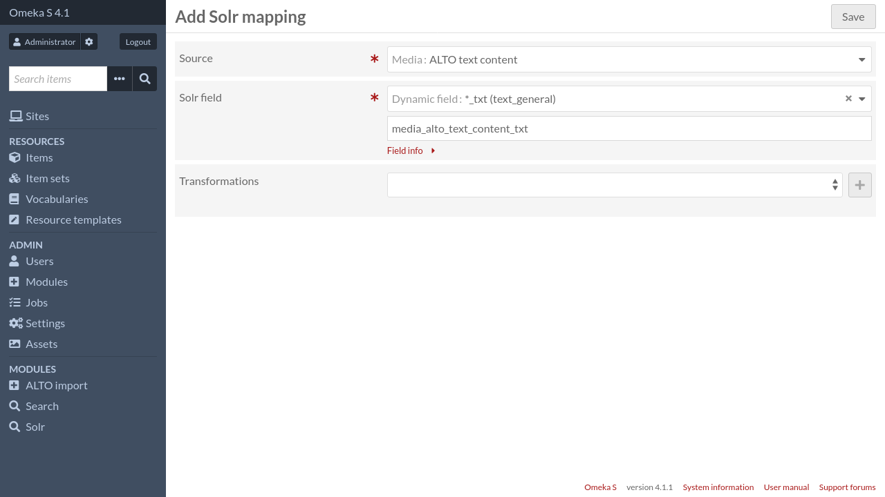

Intégration avec Solr
Si vous avez le module Solr une nouvelle source de correspondance sera disponible (« Média: contenu texte ALTO »).
Si vous avez le module Solr une nouvelle source de correspondance sera disponible (« Média: contenu texte ALTO »).
